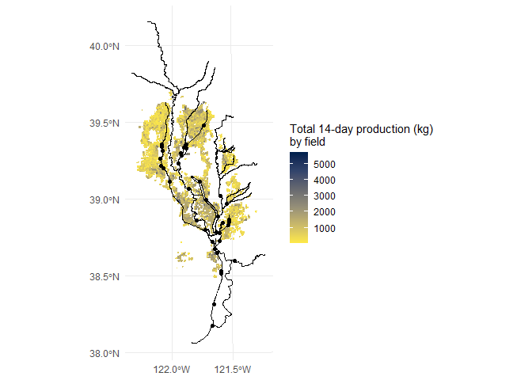
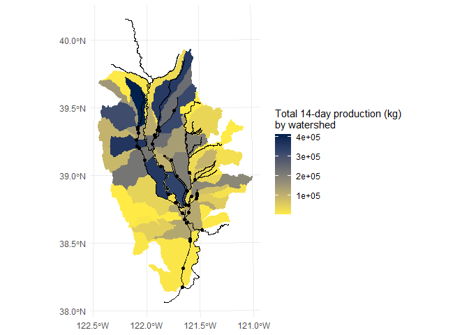
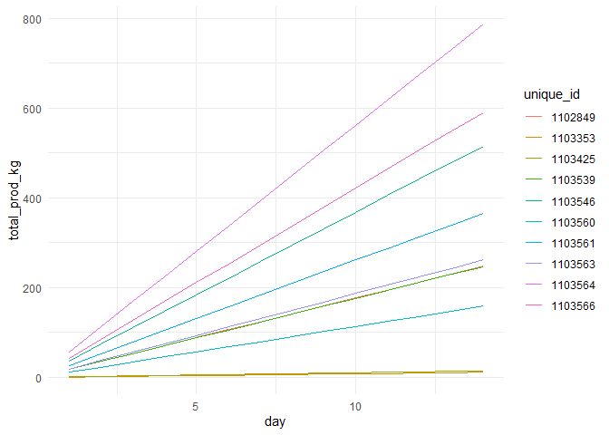

Import
library(fishFoodMWD)Main datasets
fields## Simple feature collection with 10106 features and 5 fields
## Geometry type: POLYGON
## Dimension: XYZ
## Bounding box: xmin: 6478160 ymin: 1939404 xmax: 6762226 ymax: 2383039
## z_range: zmin: 0 zmax: 0
## Projected CRS: NAD83(2011) / California zone 2 (ftUS)
## # A tibble: 10,106 × 6
## unique_id county geometry group_id area_ac volume_af
## * <chr> <chr> <POLYGON [US_survey_foot]> <chr> <dbl> <dbl>
## 1 1103539 Glenn Z ((6526707 2289953 0, 6526695 2… 1802010… 23.4 9.76
## 2 1102849 Glenn Z ((6517766 2307611 0, 6517767 2… 1802010… 23.5 9.78
## 3 1103353 Glenn Z ((6501679 2309168 0, 6501671 2… 1802010… 1.06 0.440
## 4 1103425 Glenn Z ((6525986 2324730 0, 6525994 2… 1802010… 1.34 0.558
## 5 1103546 Glenn Z ((6535820 2277869 0, 6535868 2… 1802010… 48.9 20.4
## 6 1103560 Glenn Z ((6499898 2267008 0, 6499909 2… 1802010… 15.1 6.27
## 7 1103561 Glenn Z ((6505757 2270476 0, 6504556 2… 1802010… 34.7 14.5
## 8 1103563 Glenn Z ((6544553 2330567 0, 6544584 2… 1802010… 24.9 10.4
## 9 1103564 Glenn Z ((6529293 2334151 0, 6529890 2… 1802010… 74.7 31.1
## 10 1103566 Glenn Z ((6551712 2337179 0, 6552789 2… 1802010… 56.0 23.3
## # ℹ 10,096 more rows
distances## # A tibble: 9,628 × 11
## unique_id return_id ds_fbs_dist return_dis totdist_ft totdist_mi fbs_name
## * <chr> <dbl> <dbl> <dbl> <dbl> <dbl> <chr>
## 1 1103539 49 261359. 41551. 302910 57.4 Lower-mid S…
## 2 1102849 49 261359. 60092. 321452 60.9 Lower-mid S…
## 3 1103353 49 261359. 69094. 330454 62.6 Lower-mid S…
## 4 1103425 50 266763. 69577. 336340 63.7 Lower-mid S…
## 5 1103546 50 266763. 21440. 288203 54.6 Lower-mid S…
## 6 1103560 49 261359. 41578. 302937 57.4 Lower-mid S…
## 7 1103561 49 261359. 38583. 299942 56.8 Lower-mid S…
## 8 1103563 50 266763. 74263. 341026 64.6 Lower-mid S…
## 9 1103564 50 266763. 77700. 344463 65.2 Lower-mid S…
## 10 1103566 50 266763. 81684. 348447 66.0 Lower-mid S…
## # ℹ 9,618 more rows
## # ℹ 4 more variables: totrect_ft <dbl>, totrect_mi <dbl>, return_rec <dbl>,
## # wet_dry <chr>
watersheds## Simple feature collection with 47 features and 4 fields
## Geometry type: POLYGON
## Dimension: XY
## Bounding box: xmin: 6431358 ymin: 1813625 xmax: 6845721 ymax: 2466237
## Projected CRS: NAD83(2011) / California zone 2 (ftUS)
## # A tibble: 47 × 5
## group_id huc10 watershed_name return_id geometry
## <chr> <chr> <chr> <int> <POLYGON [US_survey_foot>
## 1 1802015901 1802015901 Honcut Creek 0 ((6723475 2313975, 67235…
## 2 1802015902 1802015902 Upper Feather Ri… 14 ((6693728 2351561, 66937…
## 3 1802015903 1802015903 Hutchinson Creek… 51 ((6753204 2200420, 67534…
## 4 1802015904-N 1802015904 Gilsizer Slough-… 58 ((6668665 2188306, 66550…
## 5 1802015905 1802015905 Lower Feather Ri… 0 ((6676057 2172657, 66749…
## 6 1802016101 1802016101 Auburn Ravine 55 ((6818743 2102685, 68189…
## 7 1802016102 1802016102 Coon Creek 52 ((6764829 2130506, 67649…
## 8 1802016103-E 1802016103 Pleasant Grove C… 53 ((6695012 2063232, 66949…
## 9 1802016104 1802016104 Curry Creek-Sacr… 56 ((6700483 2053310, 67009…
## 10 1802016205 1802016205 Lower Putah Creek 40 ((6527443 1977353, 65274…
## # ℹ 37 more rows
returns## Simple feature collection with 38 features and 6 fields
## Geometry type: POINT
## Dimension: XY
## Bounding box: xmin: 6534003 ymin: 1826703 xmax: 6710196 ymax: 2299928
## Projected CRS: NAD83(2011) / California zone 2 (ftUS)
## # A tibble: 38 × 7
## return_name return_id ds_return_id ds_fbs_dist ds_fbs_name
## * <chr> <int> <int> <dbl> <chr>
## 1 Sacramento River Deep Water S… 1 1 0 North Delta
## 2 Sankey Diversion 9 9 0 Lower-mid …
## 3 Knights Landing Outfall Gates 10 10 0 Lower-mid …
## 4 Rough and Ready Pumping Plant 11 11 0 Lower-mid …
## 5 Drainage Pumping Plant RD 70 12 12 0 Upper-mid …
## 6 Karnak Drainage Facility 16 16 0 Lower-mid …
## 7 Gilsizer Slough to East Borro… 20 16 102506. Lower-mid …
## 8 Sutter Bypass to Feather River 21 21 0 Feather Ri…
## 9 Wallace Weir 22 0 213053. North Delta
## 10 Fair Ranch Return 23 23 0 Lower-mid …
## # ℹ 28 more rows
## # ℹ 2 more variables: geometry <POINT [US_survey_foot]>, return_direct <chr>
Other layers
streams## Simple feature collection with 41 features and 2 fields
## Geometry type: MULTILINESTRING
## Dimension: XY
## Bounding box: xmin: 6466284 ymin: 1783885 xmax: 6784150 ymax: 2546630
## Projected CRS: NAD83(2011) / California zone 2 (ftUS)
## # A tibble: 41 × 3
## stream_id stream_name geometry
## <int> <chr> <MULTILINESTRING [US_survey_foot]>
## 1 5 Big Chico Creek ((6634944 2412054, 6634880 2411933, 663…
## 2 14 Stony Creek ((6466284 2424673, 6466384 2424771, 646…
## 3 19 Feather River ((6708213 2321281, 6708197 2321255, 670…
## 4 20 Yuba River ((6765041 2210830, 6764851 2210882, 676…
## 5 23 American River ((6784150 1994710, 6783549 1994508, 678…
## 6 18 Bear River ((6699127 2118467, 6699117 2118443, 669…
## 7 16 Upper-mid Sacramento River ((6504256 2546317, 6504261 2546312, 650…
## 8 21 Lower-mid Sacramento River ((6610934 2130554, 6610932 2130547, 661…
## 9 32 North Delta ((6703899 1929980, 6704334 1928120, 670…
## 10 24 Lower Sacramento River ((6702038 1979678, 6702148 1979453, 670…
## # ℹ 31 more rows
canals## Simple feature collection with 80 features and 2 fields
## Geometry type: LINESTRING
## Dimension: XY
## Bounding box: xmin: 6534003 ymin: 1826703 xmax: 6697335 ymax: 2355630
## Projected CRS: NAD83(2011) / California zone 2 (ftUS)
## # A tibble: 80 × 3
## canal_id canal_name geometry
## <int> <chr> <LINESTRING [US_survey_foot]>
## 1 9 Natomas Cross Canal (6695945 2064719, 6695220 2064156)
## 2 9 Natomas Cross Canal (6695220 2064156, 6676008 2049240, …
## 3 10 Main Canal (6682739 2069936, 6682816 2069795, …
## 4 10 Main Canal (6682832 2069755, 6682888 2069618, …
## 5 11 Hunters Creek 2 Diversion Canal (6537828 2250408, 6537754 2250409)
## 6 13 Main Drainage Levee Canal (6595410 2245915, 6595123 2245630, …
## 7 15 Colusa Basin Drainage Canal (6567696 2129923, 6571230 2125974, …
## 8 26 East Borrow Ditch (6641825 2125063, 6641048 2126700, …
## 9 26 East Borrow Ditch (6627738 2168387, 6627205 2167714, …
## 10 28 West Borrow Ditch (6612131 2135695, 6612545 2135929, …
## # ℹ 70 more rowsCalculations
Moss et al. (2009) estimated that invertebrate biomass in flooded post-harvest agricultural fields increased at an average rate of 0.186 g/m^2 per day.
How much invertebrate biomass is produced by each field in 14 days?
fields |>
calc_inv_mass(14) |>
ggplot() +
geom_sf(aes(fill = total_prod_g, color = total_prod_g)) +
geom_sf(data=streams) + geom_sf(data=canals) + geom_sf(data=returns) +
scale_fill_viridis_c(aesthetics = c("colour", "fill"),
option="cividis",
direction=-1,
name="Total 14-day production (g) \nby field") +
ggplot2::scale_y_continuous(breaks = seq(38, 40, by=0.5)) +
ggplot2::scale_x_continuous(breaks = seq(-122.5, -120.5, by=0.5))
Which watersheds produce the most invertebrate biomass?
total_prod_by_group <- fields |>
calc_inv_mass(14) |>
group_by(group_id) |>
summarize(sum_total_prod_g = sum(total_prod_g)) |>
st_drop_geometry()
watersheds |>
left_join(total_prod_by_group) |>
ggplot() +
geom_sf(aes(fill = sum_total_prod_g, color = sum_total_prod_g)) +
geom_sf(data=streams) + geom_sf(data=canals) + geom_sf(data=returns) +
scale_fill_viridis_c(aesthetics = c("colour", "fill"),
option="cividis",
direction=-1,
name="Total 14-day production (g) \nby watershed") +
ggplot2::scale_y_continuous(breaks = seq(38, 40, by=0.5)) +
ggplot2::scale_x_continuous(breaks = seq(-122.5, -120.5, by=0.5))
These results are directly proportional to field acreage.
Growth in biomass over time by field (illustrative example):
fields |>
head(n = 10) |>
calc_inv_mass_ts(14) |>
ggplot() + geom_line(aes(x=day, y=total_prod_g, color=unique_id))